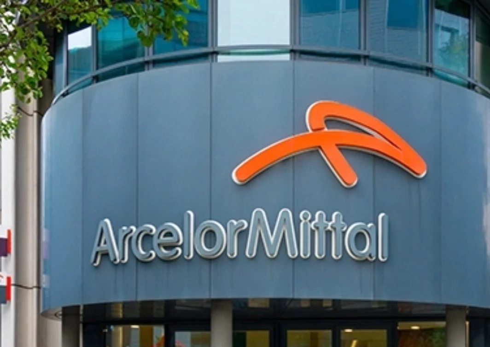

Actualité parlementaire
« Nationaliser ArcelorMittal ». La proposition de loi des députés communistes
Date indiquée par Facebook · 30 juin 2025
Repères éditoriaux
Nous avions relayé des extraits de l’exposé des motifs de la proposition de loi communiste sur la nationalisation d’ArcelorMittal. Le texte lie l’avenir des sites sidérurgiques à la protection des emplois et à la maîtrise publique de la filière.
Texte conservé avec la publication
Nationaliser ArcelorMittal - Extraits de l’exposé des motifs de la proposition de loi communiste.
ArcelorMittal, malgré 17 milliards d’euros de fonds propres et la perception d’aides publiques massives, a annoncé la suppression de 636 emplois en France, dont 400 postes de production. (…)
Face à cette situation, nous proposons, à l’image des initiatives prises en Italie et au Royaume-Uni, de nationaliser les actifs d’ArcelorMittal situés en France et de créer une société publique chargée de leur exploitation et de leur reconversion.
Cette nationalisation répond à trois impératifs majeurs : Un impératif en termes de transition écologique et de calibrage des investissements nécessaires à la décarbonation de la production d’acier, en particulier la conversion des hauts-fourneaux à l’hydrogène et l’introduction de technologies de captage du carbone. Un impératif en termes de sauvegarde des emplois directs et indirects et des compétences liés à la production d’acier en France, dans un secteur stratégique pour l’industrie nationale. De plus, l’acier constitue une matière première critique, comme l’a rappelé récemment la Commission européenne ; c’est donc un impératif de souveraineté industrielle et énergétique. Enfin, la sécurisation de l’approvisionnement en acier décarboné permettra de stabiliser les coûts et d’éviter les interruptions de production dans ces industries clés.
En ce sens, la nationalisation pérenne des actifs français d’ArcelorMittal représente un investissement stratégique pour assurer la transition énergétique et renforcer la souveraineté industrielle. Cette nationalisation pourra être financée par une taxe exceptionnelle sur les superprofits des multinationales, par l’émission d’emprunts obligataires d’État ouverts aux citoyens et aux investisseurs institutionnels, ou encore par le remboursement anticipé des aides publiques perçues par ArcelorMittal.
L’État peut aussi solliciter le financement de l’Union européenne pour les projets de transition énergétique, notamment à travers le mécanisme de financement du Green Deal et les programmes Horizon Europe. Enfin la production future des sites, due à l’augmentation de la production d’acier décarboné et à la réduction des importations, contribuera à amortir les coûts de la nationalisation.
Près de 45 ans après la nationalisation d’Usinor-Sacilor, il est temps de renouer avec une ambition industrielle forte. La sidérurgie française peut redevenir un fleuron de la transition énergétique et de la souveraineté européenne.
Article publié dans CommunisteS, numéro 1047 du 25 juin 2025.

Sources
Archive rouge · export Facebook · AR-0002-FB-01078
À lire aussi · Michelin à Cholet. La manifestation du 12 décembre en vidéo · Le lien vidéo